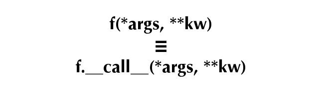
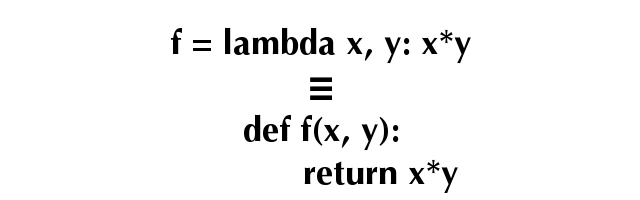

Welcome to the O'Reilly School of Technology (OST) Advanced Python course! We're happy you've chosen to learn Python programming with us. By the time you finish the course, you will have expanded your knowledge of Python and applied it to some really interesting technologies.
This class builds on your existing Python knowledge, incorporating further object oriented design principles and techniques with the intention of rounding out your skill set. Techniques like recursion, composition and delegation are explained and put into practice through the ever-present test-driven practical work.
Upon completion of this course, you will be able to:
- Extend Python code functionality through inheritance, complex delegation, and recursive composition
- Publish, subscribe, and optimize your code
- Create advanced class decorators and generators in Python
- Demonstrate knowledge of Python introspection
- Apply multi-threading and mult-processing to Python development
- Manage arithmetic contexts and memory mapping
- Demonstrate understanding of the Python community, conferences, and job market
- Develop a multi-processing solution to a significant data processing problem
As with every O'Reilly School of Technology course, we'll take the useractive approach to learning. This means that you (the user) will be active! You'll learn by doing, building live programs, testing them and experimenting with them—hands-on!
To learn a new skill or technology, you have to experiment. The more you experiment, the more you learn. Our system is designed to maximize experimentation and help you learn to learn a new skill.
We'll program as much as possible to be sure that the principles sink in and stay with you.
Each time we discuss a new concept, you'll put it into code and see what YOU can do with it. On occasion we'll even give you code that doesn't work, so you can see common mistakes and how to recover from them. Making mistakes is actually another good way to learn.
Here are some tips for using O'Reilly School or Technology courses effectively:
- Type the code. Resist the temptation to cut and paste the example code we give you. Typing the code actually gives you a feel for the programming task. Then play around with the examples to find out what else you can make them do, and to check your understanding. It's highly unlikely you'll break anything by experimentation. If you do break something, that's an indication to us that we need to improve our system!
- Take your time. Learning takes time. Rushing can have negative effects on your progress. Slow down and let your brain absorb the new information thoroughly. Taking your time helps to maintain a relaxed, positive approach. It also gives you the chance to try new things and learn more than you otherwise would if you blew through all of the coursework too quickly.
- Experiment. Wander from the path often and explore the possibilities. We can't anticipate all of your questions and ideas, so it's up to you to experiment and create on your own. Your instructor will help if you go completely off the rails.
- Accept guidance, but don't depend on it. Try to solve problems on your own. Going from misunderstanding to understanding is the best way to acquire a new skill. Part of what you're learning is problem solving. Of course, you can always contact your instructor for hints when you need them.
- Use all available resources! In real-life problem-solving, you aren't bound by false limitations; in OST courses, you are free to use any resources at your disposal to solve problems you encounter: the Internet, reference books, and online help are all fair game.
- Have fun! Relax, keep practicing, and don't be afraid to make mistakes! Your instructor will keep you at it until you've mastered the skill. We want you to get that satisfied, "I'm so cool! I did it!" feeling. And you'll have some projects to show off when you're done.
We'll try out lots of examples in each lesson. We'll have you write code, look at code, and edit existing code. The code will be presented in boxes that will indicate what needs to be done to the code inside.
Whenever you see white boxes like the one below, you'll type the contents into the editor window to try the example yourself. The CODE TO TYPE bar on top of the white box contains directions for you to follow:
White boxes like this contain code for you to try out (type into a file to run). If you have already written some of the code, new code for you to add looks like this. If we want you to remove existing code, the code to removewill look like this.
We may run programs and do some other activities in a terminal session in the operating system or other command-line environment. These will be shown like this:
The plain black text that we present in these INTERACTIVE boxes is provided by the system (not for you to type). The commands we want you to type look like this.
Code and information presented in a gray OBSERVE box is for you to inspect and absorb. This information is often color-coded, and followed by text explaining the code in detail:
Gray "Observe" boxes like this contain information (usually code specifics) for you to observe.
The paragraph(s) that follow may provide addition details on information that was highlighted in the Observe box.
We'll also set especially pertinent information apart in "Note" boxes:
| Note | Notes provide information that is useful, but not absolutely necessary for performing the tasks at hand. |
| Tip | Tips provide information that might help make the tools easier for you to use, such as shortcut keys. |
| WARNING | Warnings provide information that can help prevent program crashes and data loss. |
Before you start programming in Python, let's review a couple of the tools you'll be using. If you've already taken the OST course on Introduction to Python, Getting More Out of Python and/or The Python Environment, you can skip to the next section if you like, or you might want to go through this section to refresh your memory.
Everything in Python is an object, but unlike most objects in Python, function objects are not created by calling a class. Instead you use the def statement, which causes the interpreter to compile the indented suite that comprises the function body and bind the compiled code object to the function's name in the current local namespace.
Like any object in Python, functions have a particular type; and like with any object in Python, you can examine a function's namespace with the dir() function. Type the commands shown:
>>> def g(x): ... return x*x ... >>> g <function g at 0x100572490> >>> type(g) <class 'function'> >>> dir(g) ['__annotations__', '__call__', '__class__', '__closure__', '__code__', '__defaults__', '__delattr__', '__dict__', '__doc__', '__eq__', '__format__', '__ge__', '__get__', '__getattribute__', '__globals__', '__gt__', '__hash__', '__init__', '__kwdefaults__', '__le__', '__lt__', '__module__', '__name__', '__ne__', '__new__', '__reduce__', '__reduce_ex__', '__repr__', '__setattr__', '__sizeof__', '__str__', '__subclasshook__'] >>>
| Modern Python | In Python 3.14, the output of dir(g) includes additional attributes such as
__annotate__, __builtins__, __qualname__, and
__type_params__ that were not present in the course's original version of Python 3.
The exact list varies by Python release; the principle is the same. |
While this tells you what attributes function objects possess, it does not make it very clear which of them are unique to functions. A good Python programmer like you needs to be able to think of a way to discover the attributes of function that aren't also attributes of the base object, object.
Think about it for a minute. Here's a hint: think about sets.
You may remember that the set() function produces a set when applied to any iterable (which includes lists: the dir() function returns a list). You may also remember that sets implement a subtraction operation: if a and b are sets, then a-b is the set of items in a that are not also in b. Go ahead and add the code in blue as shown:
>>> def f(x): ... return x ... >>> function_attrs = set(dir(f)) >>> object_attrs = set(dir(object)) >>> function_attrs -= object_attrs >>> from pprint import pprint >>> pprint(sorted(function_attrs)) ['__annotate__', '__annotations__', '__builtins__', '__call__', '__closure__', '__code__', '__defaults__', '__dict__', '__get__', '__globals__', '__kwdefaults__', '__module__', '__name__', '__qualname__', '__type_params__'] >>>
| Modern Python | The output above is from Python 3.14. The original course showed a shorter list
(__annotations__, __call__, __closure__,
__code__, __defaults__, __dict__, __get__,
__globals__, __kwdefaults__, __module__,
__name__). Python 3 has grown several new function attributes since then; the
technique of using set subtraction to find them remains just as useful. |
At this stage in your Python programming career, you don't need to worry about most of these, but there's certainly no harm in learning what they do. Some of the features they offer are very advanced. You can read more about them in the official Python documentation. You can learn a lot by working on an interactive terminal session and by reading the documentation.
The __call__() method is interesting—its name implies that it has something to do with function calling, and this is correct. The interpreter calls any callable object by making use of its __call__() method. You can actually call this method directly if you want to; it's exactly the same as calling the function directly.
>>> def f1(x):
... print("f1({}) called".format(x))
... return x
...
>>> f1.__call__(23) # should be equivalent to f1(23)
f1(23) called
23
>>>
You can define your own classes to include a __call__() method, and if you do, the instances you create from that class will be callable directly, just like functions. This is a fairly general mechanism that illustrates a Python equivalence you haven't observed yet:

Give it a try. Create a class with instances that are callable. Then verify that you can call the instances:
>>> class Func:
... def __call__(self, arg):
... print("%r(%r) called" % (self, arg))
... return arg
...
>>> f2 = Func()
>>> f2
<__main__.Func object at 0x100569dd0>
>>> f2("Danny")
<__main__.Func object at 0x100569dd0>('Danny') called
'Danny'
>>>
As we've seen, when you define a __call__() method on the class, you can call its instances. These calls result in the activation of the __call__() method, with the instance provided (as always on a method call) as the first argument, followed by the positional and keyword arguments that were passed to the instance call. Methods are normally defined on a class. While it is possible to bind callable objects to names in an instance's namespace, the interpreter does not treat it as a true method, and as such, it does not add the instance as a first argument. So, callables in the instance's __dict__ are called with only the arguments present on the call line—no instance is implicitly added as a first argument.
| Note | The so-called "magic" methods (those with names that begin and end with a double underscore) are never looked for on the instance—the interpreter goes straight to the classes for these methods. So even when the instance's __dict__ contains the key "__call__", it is ignored and the class's __call__() method is activated. |
Let's continue our console session:
>>> def userfunc(arg):
... print("Userfunc called: ", arg)
...
>>> f2.regular = userfunc
>>> f2.regular("Instance")
Userfunc called: Instance
>>> f2.__call__ = userfunc
>>> f2("Hopeful")
<__main__.Func object at 0x100569dd0>('Hopeful') called
'Hopeful'
Since all callables have a __call__() method, and the __call__() method is callable, you might wonder whether it too has a __call__() method. The answer is yes, it does (and so does that __call__() method, and so on...):
>>> "__call__" in dir(f2.__call__)
True
>>> f2.__call__("Audrey")
Userfunc called: Audrey
>>> f2.__call__.__call__("Audrey")
Userfunc called: Audrey
>>> f2.__call__.__call__.__call__("Audrey")
Userfunc called: Audrey
>>>
Because functions are first-class objects, they can be passed as arguments to other functions, and such. If f and g are functions, then mathematicians defined the composition f * g of those two functions by saying that (f * g)(x) = f(g(x)). In other words, the composition of two functions is a new function, that behaves the same as applying the first function to the output of the second.
Suppose you were given two functions; could you construct their composition? Of course you could! For example, you could write a function that takes two functions as arguments, then internally defines a function that calls the first on the result of the second. Then the compose function returns that function. It's actually almost easier to write the function than it is to describe it:
>>> def compose(g, h):
... def anon(x):
... return g(h(x))
... return anon
...
>>> f3 = compose(f1, f2)
>>> f3("Shillalegh")
<__main__.Func object at 0x100569dd0>('Shillalegh') called
f1('Shillalegh') called
'Shillalegh'
While it's pretty straightforward to compose functions this way, a mathematician would find it much more natural to compose the functions with a multiplication operator (the asterisk*). Unfortunately, an attempt to multiply two functions together is doomed to fail, as Python functions have not been designed to be multiplied. If we could add a __mul__() method to our functions, we might stand a chance, but as we've seen, this is not possible with function instances, and the class of functions is a built-in object written in C: impossible to change and difficult from which to inherit. Even when you do subclass the function type, how would you create instances? The def statement will always create regular functions.
While you may not be able to subclass the function object, you do know how to create object classes with callable instances. Using this technique, you could create a class with instances that act as proxies for the functions. This class could define a __mul__() method, which would take another similar class as an argument and return the composition of the two proxied functions. This is typical of the way that Python allows you to "hook" into its workings to achieve a result that is simpler to use.
Create a program called composable.py as shown below:
"""
composable.py: defines a composable function class.
"""
class Composable:
def __init__(self, f):
"Store reference to proxied function."
self.func = f
def __call__(self, *args, **kwargs):
"Proxy the function, passing all arguments through."
return self.func(*args, **kwargs)
def __mul__(self, other):
"Return the composition of proxied and another function."
if type(other) is Composable:
def anon(x):
return self.func(other.func(x))
return Composable(anon)
raise TypeError("Illegal operands for multiplication")
def __repr__(self):
return "<Composable function {0} at 0x{1:X}>".format(
self.func.__name__, id(self))| Note | An alternative implementation of the __mul__() method might have used the statement return self(other(x)). Do you think that this would have been a better implementation? Why or why not? |
You will need tests, of course. So you should also create a program called test_composable.py that reads as follows.
"""
test_composable.py" performs simple tests of composable functions.
"""
import unittest
from composable import Composable
def reverse(s):
"Reverses a string using negative-stride sequencing."
return s[::-1]
def square(x):
"Multiplies a number by itself."
return x*x
class ComposableTestCase(unittest.TestCase):
def test_inverse(self):
reverser = Composable(reverse)
nulltran = reverser * reverser
for s in "", "a", "0123456789", "abcdefghijklmnopqrstuvwxyz":
self.assertEquals(nulltran(s), s)
def test_square(self):
squarer = Composable(square)
po4 = squarer * squarer
for v, r in ((1, 1), (2, 16), (3, 81)):
self.assertEqual(po4(v), r)
def test_exceptions(self):
fc = Composable(square)
with self.assertRaises(TypeError):
fc = fc * 3
if __name__ == "__main__":
unittest.main()
| Modern Python | self.assertEquals() (with an s) was a deprecated alias
for self.assertEqual(). It was removed in Python 3.12. Running this test as written
will raise an AttributeError on the test_inverse method; change
assertEquals to assertEqual to fix it. |
The unit tests are relatively straightforward, simply comparing the expected results from known inputs with expected outputs. In older Python releases it could be difficult to find out which iteration of a loop had caused the assertion to fail, but with the improved error messages of newer releases this is much less of a problem: argument values for failing assertions are much better reported than previously.
The exception is tested by running the TestCase's assertRaises() method with a single argument (specifying the exception(s) that are expected and acceptable. Under these circumstances the method returns what is called a "context manager" that will catch and analyze any exceptions raised from the indented suite. (There is a broader treatment of context managers in a later lesson). When you run the test program you should see three successful tests.
... ---------------------------------------------------------------------- Ran 3 tests in 0.001s OK
Once you get the idea of how this works, you'll soon realize that the __mul__() method could be extended to handle a regular function—in other words, as long as the operand to the left of the "*" is a Composable, the operand to the right would be either a Composable or a function. So the method can be extended slightly to make Composables more usable.
Let's go ahead and edit composable.py to allow composition with 'raw' functions:
"""
composable.py: defines a composable function class.
"""
import types
class Composable:
def __init__(self, f):
"Store reference to proxied function."
self.func = f
def __call__(self, *args, **kwargs):
"Proxy the function, passing all arguments through."
return self.func(*args, **kwargs)
def __mul__(self, other):
"Return the composition of proxied and another function."
if type(other) is Composable:
def anon(x):
return self.func(other.func(x))
return Composable(anon)
elif type(other) is types.FunctionType:
def anon(x):
return self.func(other(x))
return Composable(anon)
raise TypeError("Illegal operands for multiplication")
def __repr__(self):
return "<Composable function {0} at 0x{1:X}>".format(
self.func.__name__, id(self))
Now the updated __mul__() method does one thing if the right operand (other) is a Composable: it defines and returns a function that extracts the functions from both Composables, that is the composition of both of those functions. But if the right-side operator is a function (which you check for by using the types module, designed specifically to allow easy reference to the less usual Python types), then the function passed in as an argument can be used directly rather than having to be extracted from a Composable.
The tests need to be modified, but not as much as you might think. The simplest change is to have the test_square() method use a function as the right operand of its multiplications. This should not lose any testing capability, since the first two tests were formerly testing essentially the same things. A further exception test is also added to ensure that when the function is the left operand an exception is also raised.
"""
test_composable.py" performs simple tests of composable functions.
"""
import unittest
from composable import Composable
def reverse(s):
"Reverses a string using negative-stride sequencing."
return s[::-1]
def square(x):
"Multiplies a number by itself."
return x*x
class ComposableTestCase(unittest.TestCase):
def test_inverse(self):
reverser = Composable(reverse)
nulltran = reverser * reverser
for s in "", "a", "0123456789", "abcdefghijklmnopqrstuvwxyz":
self.assertEquals(nulltran(s), s)
def test_square(self):
squarer = Composable(square)
po4 = squarer * squarer
for v, r in ((1, 1), (2, 16), (3, 81)):
self.assertEqual(po4(v), r)
def test_exceptions(self):
fc = Composable(square)
with self.assertRaises(TypeError):
fc = fc * 3
with self.assertRaises(TypeError):
fc = square * fc
if __name__ == "__main__":
unittest.main()
A TypeError exception therefore is raised when you attempt to multiply a function by a Composable. The tests as modified should all succeed. If not, then debug your solution until they do, with your mentor's assistance if necessary.
The extensions you made to the Composable class in the last exercise made it more capable, but the last example shows that there are always wrinkles that you need to take care of to make your code as fully general as it can be. How far to go in adapting to all possible circumstances is a matter of judgment. Having a good set of tests at least ensures that the code is being exercised (it's also a good idea to employ coverage testing, to ensure that your tests don't leave any of the code unexecuted: this is not always as easy as you might think).
Python also has a feature that allows you to define simple functions as an expression. The lambda expression is a way of expressing a function without having to use a def statement. Because it's an expression, there are limits to what you can do with a lambda. Some programmers use them frequently, but others prefer to define all of their functions. It's important for you to understand them, because you'll likely encounter them in other people's code.

While the equivalence above is not exact, it's close enough for all practical purposes. The keyword lambda is followed by the names of any parameters (all parameters to lambdas are positional) in a comma-separated list. A colon separates the parameters from the expression (normally referencing the parameters). The value of the expression will be returned from a call:
>>> add1 = lambda x: x+1 >>> add1 <function <lambda> at 0x100582270> >>> sqr = lambda x: x*x >>> sqp1 = compose(sqr, add1) >>> sqp1(5) 36 >>> type(add1) <class 'function'> >>>
It is relatively easy to write a lambda equivalent to the compose() function we created earlier—and it works as it would with any callable. The last result shows you that to the interpreter, lambda expressions are entirely equivalent to functions (lambda expressions and functions have the same type, "<class 'function'>").
Also, the lambda has no name (or more precisely: all lambdas have the same name). When you define a function with def, the interpreter stores the name from the def statement as its __name__ attribute. All lambdas have the same name, '<lambda>', when they are created. You can change that name by assignment to the attribute, but in general, if you're going to spend more than one line on a lambda, then you might as well just write a named function instead.
Finally, keep in mind that lambda is deliberately restricted to functions with bodies that comprise a single expression (which is implicitly what the lambda returns when called, with any argument values substituted for the parameters in the expression). Again, rather than writing expressions that continue over several lines, it would be better to write a named function (which, among other things, can be properly documented with docstrings). If you do wish to continue the expression over multiple lines, the best way to do that is to parenthesize the lambda expression. Do you think the parenthesized second version is an improvement? Think about that as you work through this interactive session:
>>> ff = lambda f, g: lambda x: f(g(x))
>>> lam = ff(f1, f2)
>>> lam("Ebenezer")
<__main__.Func object at 0x10057a510>('Ebenezer') called
f1('Ebenezer') called
'Ebenezer'
>>>
>>> ff = lambda f, g: (lambda x:
... f(g(x)))
>>> lam = ff(f1, f2)
>>> lam("Ebenezer")
<__main__.Func object at 0x10057a510>('Ebenezer') called
f1('Ebenezer') called
'Ebenezer'
>>>
If you understand that last example, consider yourself a highly competent Python programmer. Well done! These points are subtle, and your understanding of the language is becoming increasingly thorough as you continue here.
The tools from this lesson will allow you to use callables with greater flexibility and to better purpose. You've learned ways to write code that is able to collaborate with the interpreter and will allow you to accomplish many of your desired programming tasks more efficiently. Nice work!